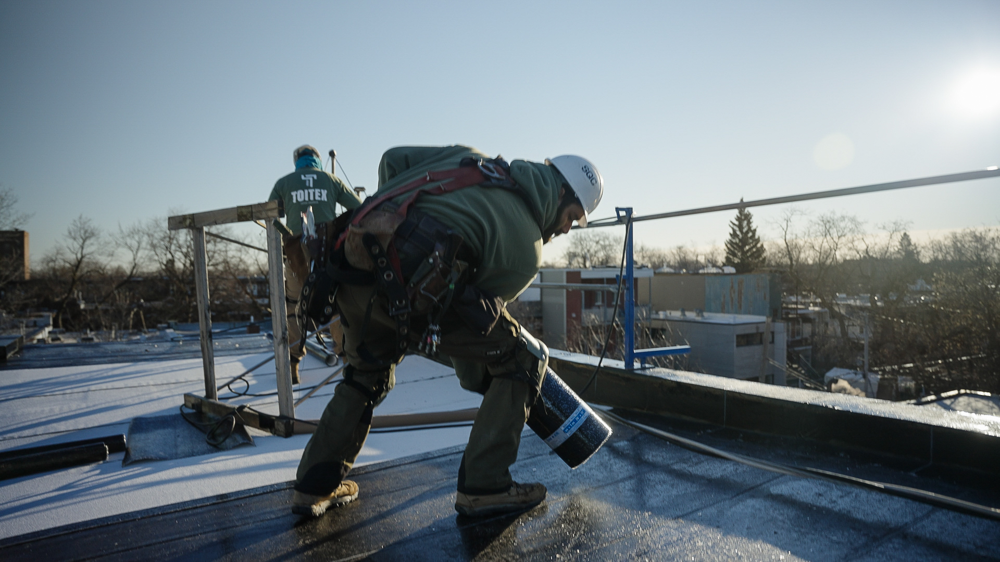
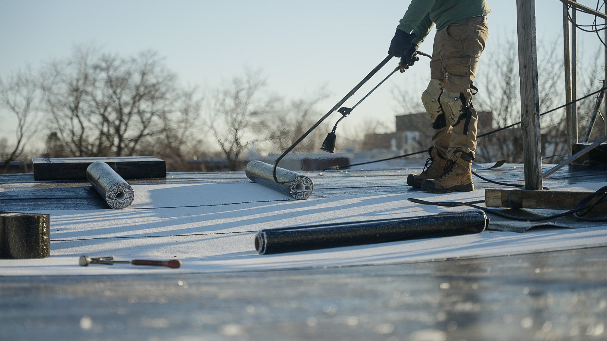

Infiltration d'eau, membrane endommagée, bardeaux arrachés par le vent — chaque heure compte. Nos couvreurs certifiés RBQ interviennent rapidement pour sécuriser votre toiture et protéger votre propriété. Service d'urgence disponible jour et nuit, partout dans le Grand Montréal. Water infiltration, damaged membrane, wind-torn shingles — every hour counts. Our RBQ-certified roofers respond quickly to secure your roof and protect your property. Emergency service available day and night, throughout Greater Montréal.
Ne laissez pas un problème mineur devenir un sinistre majeur. Une intervention rapide peut vous éviter des milliers de dollars en dommages structurels et en moisissures. Don't let a minor issue become a major disaster. Quick intervention can save you thousands in structural damage and mold remediation.
(450) 949-0900
Qu'il s'agisse d'un problème urgent ou d'une réparation préventive, nos couvreurs possèdent l'expertise nécessaire pour traiter chaque situation avec précision et efficacité. Whether it's an urgent issue or a preventive repair, our roofers have the expertise to handle every situation with precision and efficiency.

De votre premier appel jusqu'à la vérification finale, chaque étape est conçue pour garantir une réparation durable et votre tranquillité d'esprit. From your first call to the final verification, every step is designed to ensure a lasting repair and your peace of mind.
Contactez-nous par téléphone. Notre équipe évalue l'urgence et planifie l'intervention dans les plus brefs délais. Contact us by phone. Our team assesses the urgency and schedules intervention as quickly as possible.
Un couvreur certifié se rend sur place pour inspecter votre toiture et identifier précisément la source du problème. A certified roofer visits your property to inspect your roof and precisely identify the source of the problem.
Nous vous fournissons un rapport détaillé avec photos, un diagnostic clair et une soumission transparente — sans obligation. We provide a detailed report with photos, a clear diagnosis and a transparent quote — no obligation.
Nos couvreurs effectuent la réparation avec des matériaux de première qualité, en respectant les normes du Code du bâtiment du Québec. Our roofers perform the repair with premium materials, meeting Québec Building Code standards.
Test d'étanchéité final, nettoyage du chantier et remise d'un rapport de travaux complet avec garantie écrite. Final waterproofing test, worksite cleanup and delivery of a complete work report with written warranty.
Une toiture qui fuit ne peut pas attendre lundi matin. Notre équipe de couvreurs d'urgence est disponible en tout temps — de jour comme de nuit, les fins de semaine et les jours fériés. Nous intervenons rapidement partout dans le Grand Montréal, de Laval à la Rive-Nord, des Laurentides à Lanaudière. Chaque minute compte pour limiter les dommages causés par l'eau à votre propriété. A leaking roof can't wait until Monday morning. Our emergency roofing team is available at all times — day and night, weekends and holidays. We respond quickly throughout Greater Montréal, from Laval to the North Shore, from the Laurentians to Lanaudière. Every minute counts to limit water damage to your property.
Trouvez les réponses aux questions les plus courantes sur nos services de réparation. Find answers to the most common questions about our repair services.